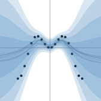

New research group!
30/10/2018
We've started a general ML research group in Oxford CS: Oxford Applied and Theoretical Machine Learning Group (OATML).
Hello! I work, study, and enjoy my time at TCS Research (TRDDC), where I am a scientist in the Embedded Devices and Intelligent Systems group in Pune. Prior to this, I was a postdoctoral fellow at the University of Illinois Urbana-Champaign, working at the Coordinated science Laboratory under the guidance of Narendra Ahuja. I earned my Ph.D. in 2022 from IIT Bombay, specializing in remote sensing applications using deep learning frameworks. My doctoral work was recognized with the “Excellence in Ph.D. Thesis” award, and I was mentored by Avik Bhattacharya with co-supervision from Biplab Banerjee and Mihai Datcu. I also hold Master's degrees from IIT Kharagpur.
Currently, my research focuses on various aspects of deep learning in image analysis, including learning with limited supervision, data retrieval, cross-sensor applications, data fusion, vision-language models, zero-shot learning, and multi-modal learning in vision and remote sensing applications.

30/10/2018
We've started a general ML research group in Oxford CS: Oxford Applied and Theoretical Machine Learning Group (OATML).

29/10/2018
Publications page has been updated with new NIPS papers. We're also organising the Third Bayesian Deep Learning workshop at NIPS 2018.

04/06/2018
I will again teach machine learning at the NASA Frontier Development Lab this summer, helping NASA make use of AI for the space program.
Fields I have published work in include
Bayesian deep learning • deep learning • approximate Bayesian inference • Gaussian processes • Bayesian modelling • Bayesian non-parametrics • scalable MCMC • generative modelling.
With applications including
AI safety • ML interpretability • reinforcement learning • active learning • natural language processing • computer vision • medical analysis.
Broadly speaking, my interests lie in the fields of linguistics, applied maths, and computer science. Most of my work is motivated by problems found at the intersections of these fields, with an arching theme of research being understanding empirically developed machine learning techniques.
A list of publications is available here.
My Résumé is available here.